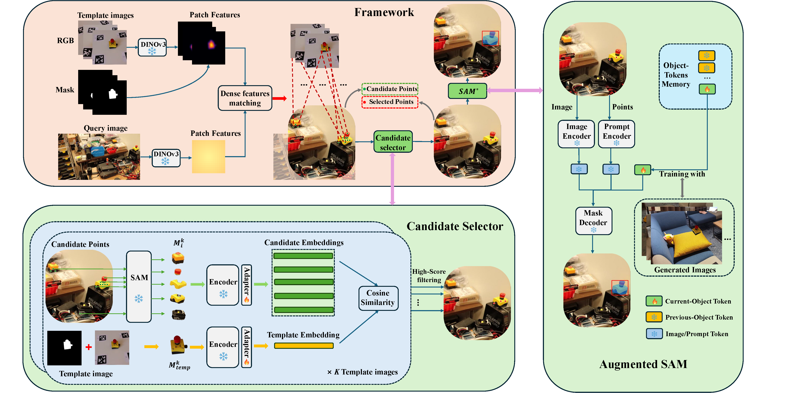
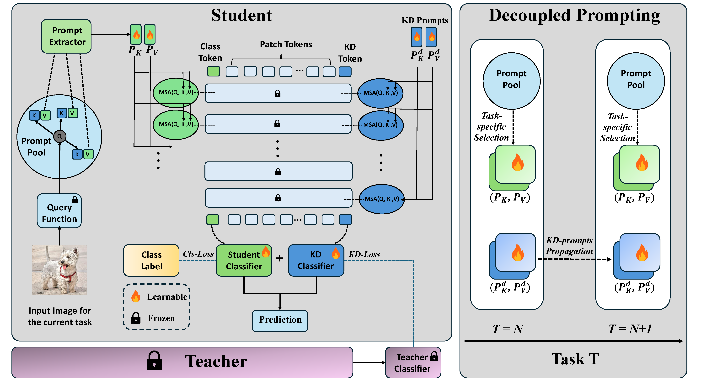
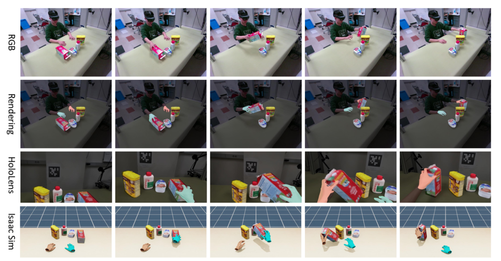
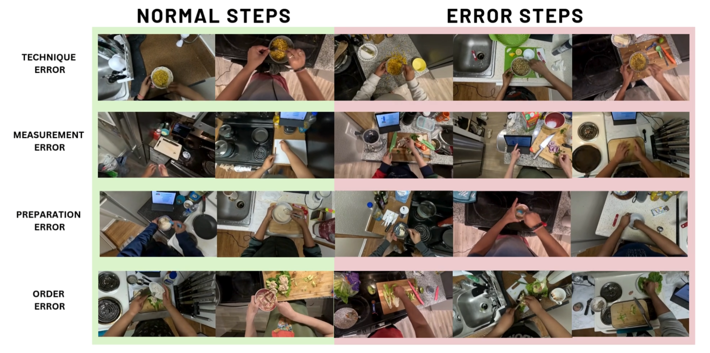
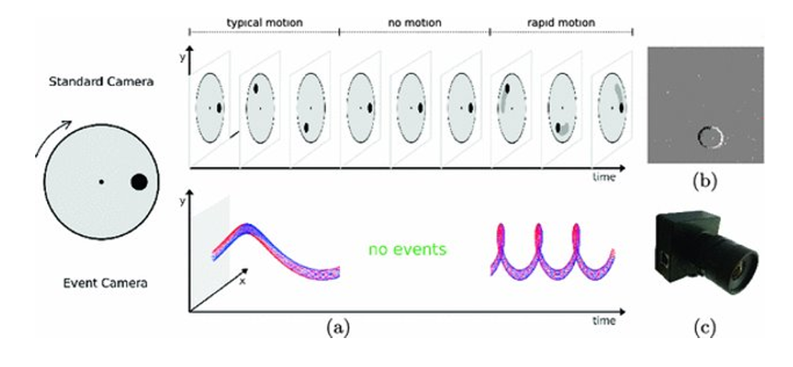
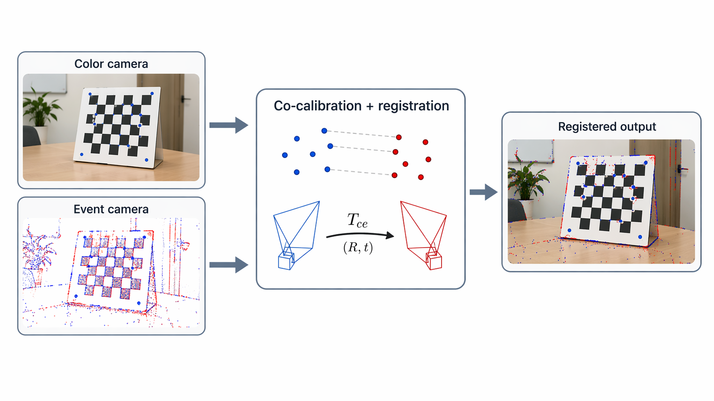
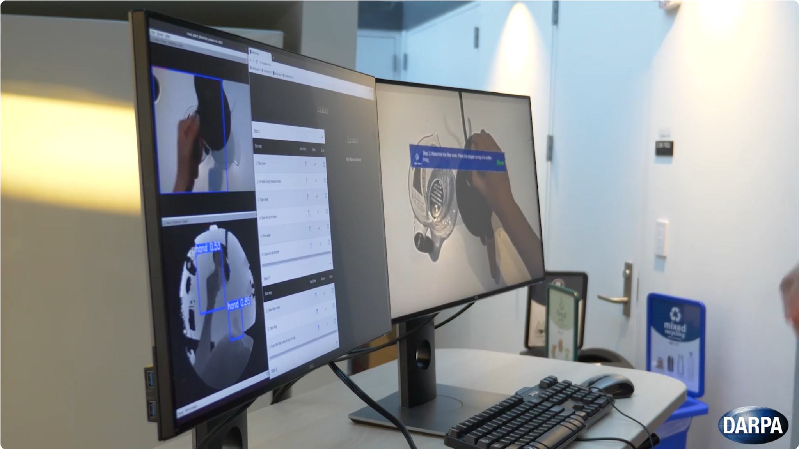
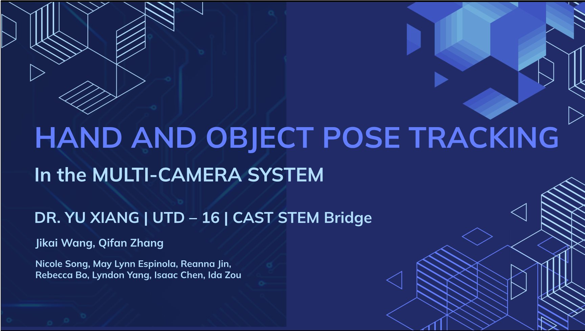
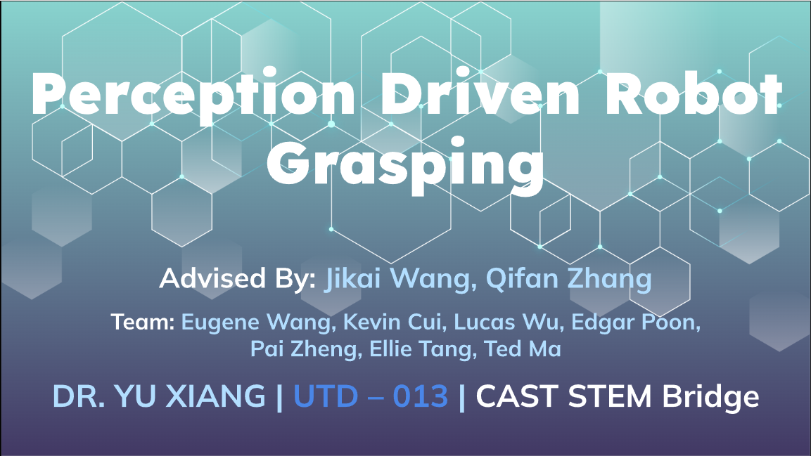

Sep 2025
Our paper HO-Cap: A Capture System and Dataset for 3D Reconstruction and Pose Tracking of Hand-Object Interaction is accepted at NeurIPS 2025 Datasets & Benchmarks Track.
My name is Qifan Zhang. I am a Ph.D. student in the Department of Computer Science at The University of Texas at Dallas. I work in the Intelligent Robotics and Vision Lab under the supervision of Professor Yu Xiang. My research interests include computer vision, robot perception, continual learning, and knowledge distillation. I am currently seeking internship and full-time opportunities. Please feel free to reach out if you would like to connect.
Our paper HO-Cap: A Capture System and Dataset for 3D Reconstruction and Pose Tracking of Hand-Object Interaction is accepted at NeurIPS 2025 Datasets & Benchmarks Track.
Our supervised team of high school students received the 2nd Prize CAST STAR Award in CAST-STEM Bridge Summer Camp 2025.
Our paper CaptainCook4D: A Dataset for Understanding Errors in Procedural Activities is accepted at NeurIPS 2024 Datasets & Benchmarks Track.
Our supervised team of high school students received the 2nd Prize CAST STAR Award in CAST-STEM Bridge Summer Camp 2024.
Participated in the DARPA PTG Demo Day at MIT.







A first-person AR assistant on Microsoft HoloLens 2 that recognizes relevant objects and provides real-time guidance for kitchen tasks such as cooking and coffee making.

A multi-camera hand-object pose estimation project that integrates 3D hand reconstruction and 6D object tracking for AR/VR and robotics applications.

A perception-driven robot grasping project that integrates object segmentation, 6D pose estimation, and robotic execution across simulation and real-world Fetch robot.